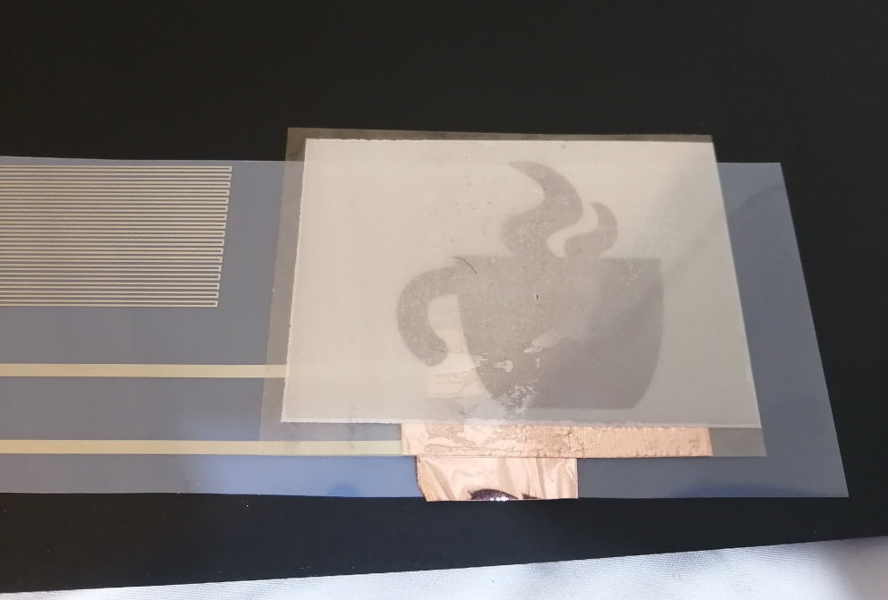
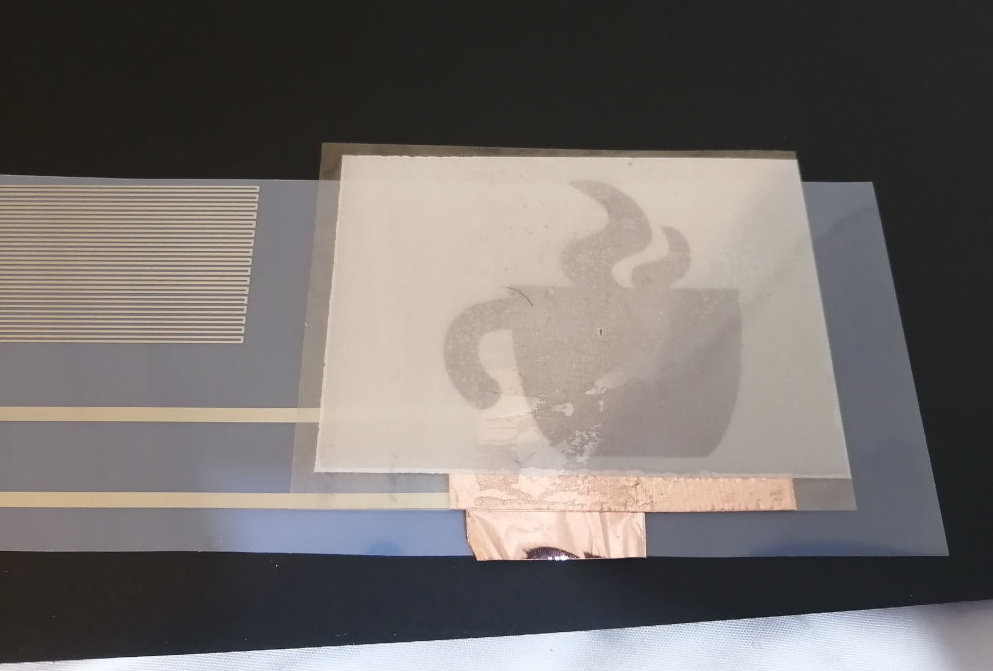
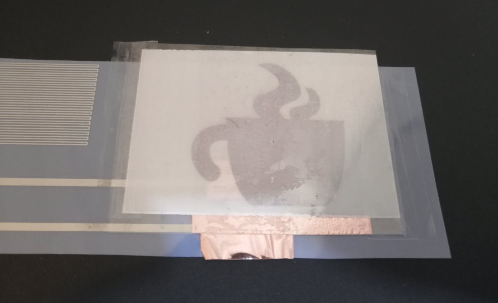
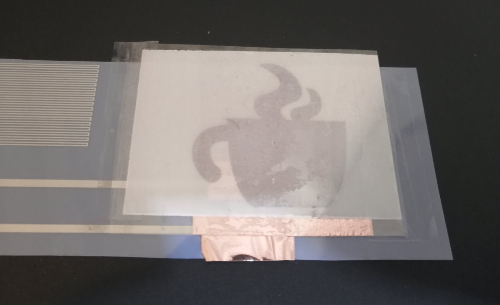
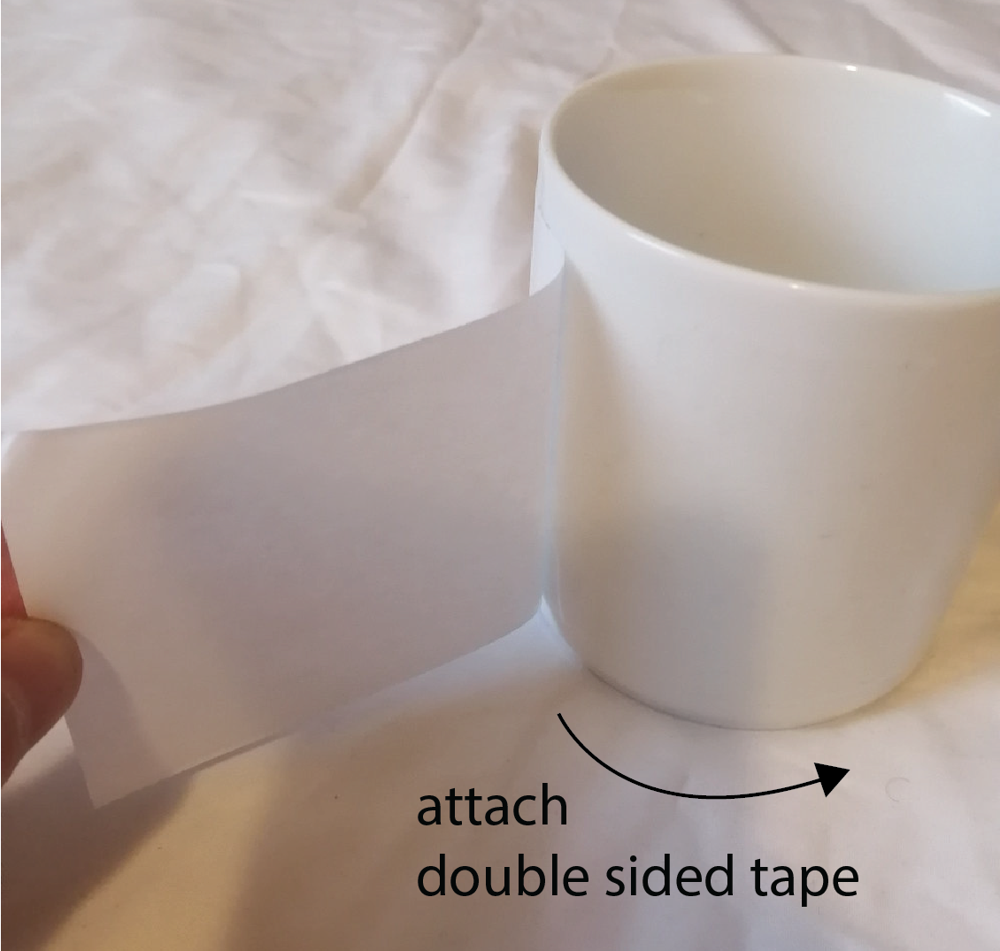

6.810 Engineering Interactive Technologies (fall 2021)
Lab 8: Mug Assembly & Display Control Using Temperature
In this lab, we will first assemble the mug, i.e. attach your inkjet printed circuit to it and solder on jumper wires to connect the mug to a breadboard. We will then build the temperature sensing circuit and write code to determine temperature based on the measured voltage. We will then add our display circuit and extend the temperature sensing code to blink the display when the temperature of the liquid in the mug is too hot so the user does not get burned.
Steps:
- Attach Sprayed EL Display to the Circuit
- Attach Circuit to the Mug
- Solder on Jumper Wires for Breadboarding
- Cover Circuit with Tape to Protect from Moisture & Touch
- Build Temperature Sensing Circuit
- Write Code to Determine Resistance of Temperature Sensor
- Correlate Resistance with Temperature Change
- Add EL Display Control Circuit to Mug
- Blink Display When High Temperature is Measured
Deliverables
At the end of the lab, upload to your student google drive:- 2-3 photos (.jpg or .png) from different angles of your assembled mug
- the Arduino code (.ino) for reading the temperature and controlling your display
- a short video (.mov or .mp4, max. 1 minute) showing how your display turned off at room temperature and starts blinking after pouring in boiling hot water in it.
(1) Attach Sprayed EL Display to the Circuit
Once you have printed your circuit and verified that the temperature sensor is having the right resistance, you are ready to attach your EL display to it.Attach Copper Tape to Circuit for EL Display Connections: Take a roll of copper tape and cut of two 6cm long pieces. Glue one half of each copper stripe on the two wires that lead to your display and bend the other half around such that the adhesive side faces upwards. Make sure that the two copper stripes don't connect to each other and have a save distance of at least 1cm.
label 1cm distance in image


Attach your Display to Copper Tape: Next, stick your display onto the sticky area of the bend-over copper stripes. Make sure that one copper strip connects only to the ITO and the other copper strip only connects to the sprayed copper layer.
 
Test Display Connection: Let's test if the connection between the display and the printed wires is working. Take your battery and inverter circuit and connect it to the two connector pads on the left hand side of the circuit. If you don't remember how to do this, look back at lab 6. Remember: do not touch the display or any part of the circuit while the battery is in use and the inverter is on. You should see that the display lights up.

Tape Down Edges of Display with Transparent Tape: Once, you verified that everything works, you can tape the display on its edges onto the circuit sheet using some transparent scotch tape. Apply a stripe of tape on the left and the right edge of your display.
 
(2) Attach Circuit to the Mug
Now that your EL display and temperature sensor are assembled together, you are ready to attach the entire circuit to the mug.Attach Double Sided Tape to Mug: We will use double sided tape to attach the entire circuit to the mug. Cut off a tape strip the length of your circuit design (17cm) and attach it across the surface of the mug. Next, remove the protective foil from the tape to expose the other adhesive side.


Attach Circuit onto Double Sided Tape: Next, take your printed circuit and glue it onto your mug.

(3) Solder on Jumper Wires for Breadboarding
Next, we want to solder jumper wires to the connector pads, which we can then use to connect to a breadboard and our microcontroller. Since the silver connector pads are not suitable for soldering, we instead solder the jumper wires onto little piece of copper tape and then attach those to the silver connector pads.Cut of One Copper Tape Strips for each Connector Pad: First cut of four copper strips, i.e. one for each of the four silver connector pads. The copper stripes should be about 3cm long, which is the size of your printed silver pads.
Solder Jumper Wire onto Copper Tape Strips: Take a soldering iron and apply a drop of solder on one of the copper strips. Next, take a short jumper wire, hold it over the solder drop, and press it down with the solder iron to melt it into the solder until it is well connected. Repeat this for all 4 jumper wires.


Attach Copper Tape/Jumper Wires to Connector Pads: Next, carefully attach the copper stripes onto your mug's connector pads.

Use Male-to-Female Jumper Wires to Extend Wires: To extend the wires and make them longer, you can connect male-to-female jumper wires to the four dangling wires.

(4) Cover Circuit with Tape to Protect from Moisture & Touch
The last step you need to do is to protect the mug from moisture and touch. This is especially important since we want to fill hot and cold water into it and some water may spill over (try to avoid it). Also, we want to protect the circuit from constant touching, which may happen with a mug. To protect the circuit, we will use clear tape to cover all the electronics.Apply Transparent Tape Over Circuit: Cut off a 19cm long stripe of our extra wide 3inch transparent tape. Carefully apply the tape onto the entire circuit. If you make a mistake here, do not pull back the tape, it will destroy the silver circuit. You need to just continue rolling the tape over the circuit even if it will not be perfect. Therefore, be extra careful.
it would be really good to have better images here

(5) Build Temperature Sensing Circuit
To measure the temperature of the liquid in the mug, we need to measure the changes in resistance of the silver trace that makes up our temperature sensor as explained in the last lab. So how can we measure resistance on the microcontroller?Measuring Resistance with a Voltage Divider Circuit: Unfortunately, we cannot directly measure resistance with the microcontroller. The microcontroller can only measure
voltage but not resistance. However, there is a way to use changes in voltage to determine resistance. A circuit that allows us to do this is called a voltage divider. Voltage Divider Circuit: The schematic of a voltage divider is shown below. It consists of one
known resistor (R1) and one unknown resistor (R2) that we want to measure. In our case, the unknown resistor R2 is our temperature sensor. For the known resistor R1, we can simply pick one but it's a good idea to pick something that matches your other resistor R2, i.e. we will use 1kOhm. Vin is the 3.3V supply voltage from the ESP32. Vout is a voltage than will change when the resistance of our temperature sensor (R2) changes.can we label this schematic so that it says 'known resistor' and 'unknown resistor' and also 'temperature sensor', also label ESP and read out voltage.
Build the Voltage Divider Circuit: Build the voltage divider on a breadboard and connect your temperature sensor on the mug to this circuit.
Can we have an image of the voltage divider circuit build from an angle that doesn't show everything? Just showing how it is connected to the mug.
(6) Write Code to Determine Resistance of Temperature Sensor
Now that we have the voltage divider circuit wired up, the question remains how does measuring the voltageVout help us determine the resistance of the temperature sensor?Computing R2 (Resistance of Temperature Sensor): In a voltage divider circuit, we can compute R2, i.e. the resistance of our temperature sensor, using the following formula:
Vout = (R2*Vin)/(R1+R2)We know
Vin since this is the 3.3V we apply with the microcontroller. We also know Vout since this is the voltage measurement from our microcontroller. We also know R1, which is our chosen resistor of 1kOhm. Thus, we have everything to solve the equation for R2 to determine the current resistance of the temperature sensor.Read Voltage Vout from Voltage Divider Circuit: Create a new Arduino program and use
analogRead() to read the voltage value Vout from the voltage divider. Write the incoming values to the Serial monitor. analogRead() returns the voltage value between 0V and 3.3V and maps it to an output range of 0 - 4095. What this means is that if you read a value of 2047 (4095/2), your voltage is around 1.65V (3.3V/2).this looks more like the serial plotter but above we talk about serial monitor?
can we increase the font size on the axis? it's impossible to read.

Write Code to Determine Resistance R2 of our Temperature Sensor: Now, it's time to apply the voltage divider formula from above. Use it to compute the resistance of your temperature sensor R2 and plot the values on the Serial Plotter. any specific formatting students have to follow, e.g. use semicolon at the end?
Smoothing the Signal with a Box Filter: You'll notice that the resistance values are fluctuating a lot in the image above (between 800 - 1200 ohm although they should be steady). This is due to the limited measurement precision of the microcontroller and environmental electric noise that slightly changes the read in voltage values. To smooth out such noise, you can use a filter. For this lab, we will use a
box filter, which when implemented can produce a more clean signal, with fluctuations only between 2032 - 2056 ohm). In the next section, we will tell you how to implement the box filter.Can we update this image to have the same ohm range as the filter image? right now this one is 800-1200 ohm and the other one is 2030-2056 ohm which is not the same temperature). Also please label left image: no filter (raw readings), right image: box filter

Write Code for the Box Filter: A
box filter works by saving an array of sensor values (the box) of a specific width (e.g., 300 values) and then computing the mean of this box. As new sensing values get read in through analogRead(), the box moves forward by one value, i.e. the oldest element in the array gets replaced by the new value and you need to recompute the mean. Implement a box filter with 300 values that smoothens out the values from analogRead(). Once you have completed the filter, your results should look like the image below. You see that the filter first collects 300 values and the mean is increasing with every new value. When the box is full, we can have a stable resistance value.
(7) Correlate Resistance with Temperature Change
Now we can determine the resistance of our temperature sensor, but how much does the resistance increase with changes in temperature? For this, you will run an experiment.Determine Resistance at Room Temperature: First, note down the mean resistance at room temperature.
Determine Resistance at 100℃C: Next, use a water kettle and boil water to 100℃C. Pour it into the mug while you continue to plot the resistance values with the serial plotter. You should notice that the values start increasing while the mug is heating up. Once you reached a stable value, write it down. The increase in resistance over room temperature should be around 4%.
Write Code to Determine Current Temperature: (This section was missing) For the purpose of this lab, we assume that temperature and resistance increase linearly. Write some code that uses your resistance value at room temperature and at 100℃C to determine other temperatures based on new incoming resistance values. Compute the expected resistance for 30℃C, 40℃C, 50℃C etc. (this is a little fuzzy, can we just tell them what display states they should have? e.g. 8 different temperatures from 20-100℃C in 10 degree increments?)
(8) Add EL Display Control Circuit to Mug
Next, we want to connect our temperature readings to the display so that we can blink it when the liquid is too hot.Connect Display Circuit to Mug: You already have the display circuit from a previous lab. All that's left to do is to connect this cicuit to the corresponding wires on the mug.
Can we have an image for this to make sure the tutorial is skimmable?
(9) Blink Display When High Temperature is Measured
In this final step, you will use your temperature readings to determine the display behavior. The display should start blinking at temperatures above >70C to help users avoid getting burned and otherwise can either be turned off or dimmed according to the current temperature (getting increasingly brighter as temperature increases). (dimming was not included, is there a reason we only had display off and display blinking?)Integrate Display Code with Temperature Sensing Code: You already wrote code for turning the display on/off and dimming it in one of the last labs. Integrate the code with your temperature sensing code.
Your final design should look like this:
Deliverables
At the end of the lab, upload to your student google drive:- 2-3 photos (.jpg or .png) from different angles of your assembled mug
- the Arduino code (.ino) for reading the temperature and controlling your display
- a short video (.mov or .mp4, max. 1 minute) showing how your display turned off at room temperature and starts blinking after pouring in boiling hot water in it.